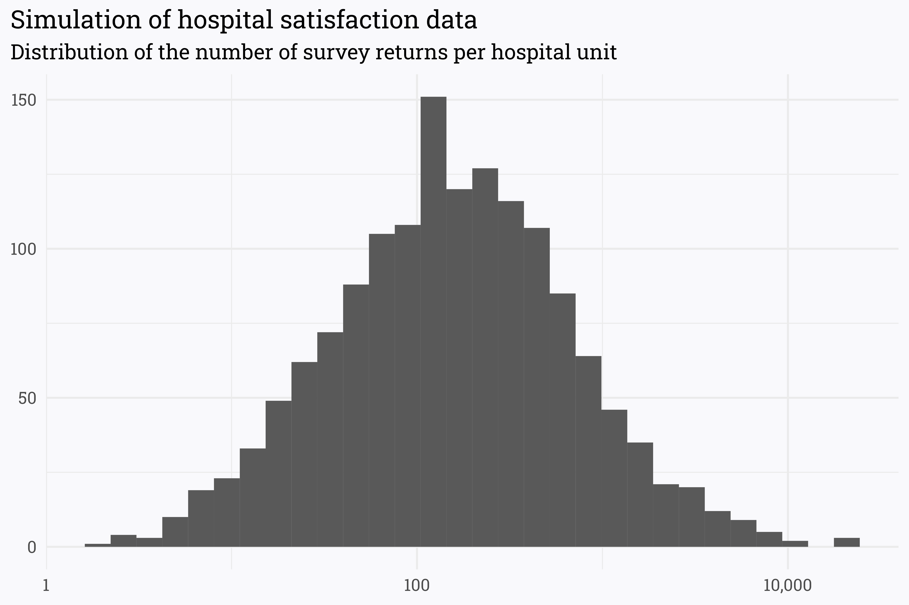
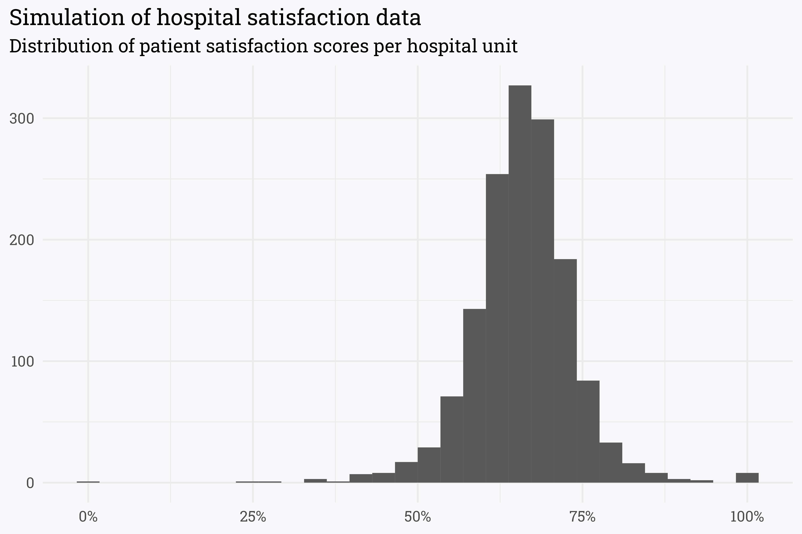
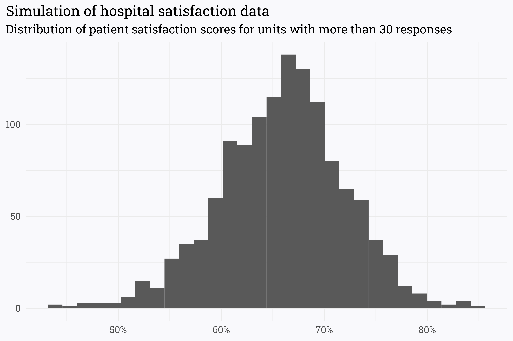
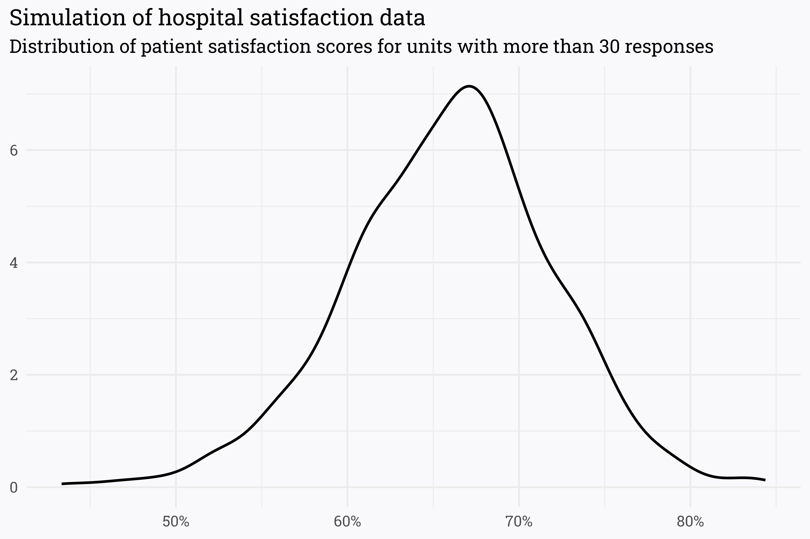
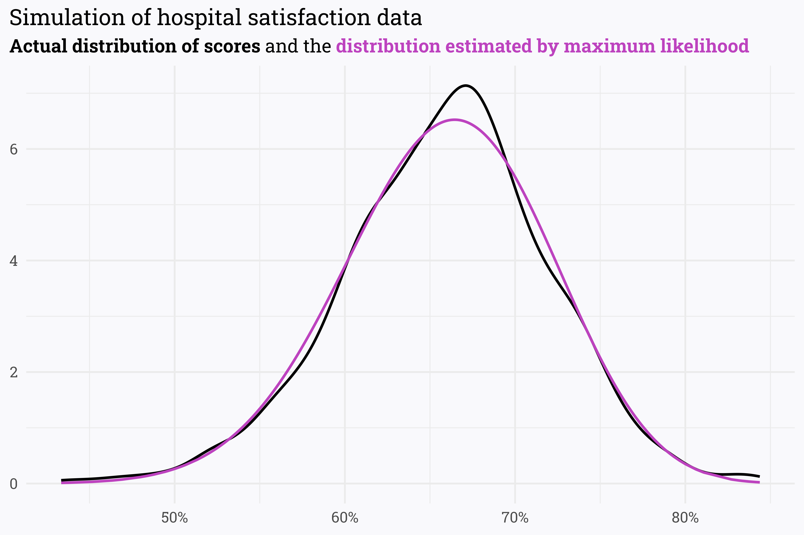

I recently picked up David Robinson’s book, Introduction to Empirical Bayes. It’s available online for a price of your own choosing (operating under a “pay-what-you-want” model), so you can technically pick it up for free, but it’s well worth the suggested price of $9.95. The book has a particular focus on practical steps for implementing Bayesian methods with code, which I appreciate. I’ve made it through Part I (of four), which makes for a good stopping point to practice what I’ve read.
The first section is highly focused on modeling the probability of success/failure of some binary outcome using a beta distribution. This is highly relevant to my work as an analyst, where whether or not a patient responded positively to a particular question on a survey can be modeled with this method. Thus far, however, I’ve taken the frequentist approach to analyses, which assumes we know nothing about what the data ought to look like prior to analyzing it. This is largely because I didn’t know of a robust way to estimate a prior for a Bayesian analysis.
Thankfully, however, the book walks through examples of exactly how to do this! We can use a maximum likelihood estimator to estimate a reasonable prior given the current data. That’s quite a bit of statistical mumbo-jumbo — in this post I’ll walk through an example that spells it out a bit more clearly using fake hospital satisfaction data (N.B.; this is largely a recreation of the steps taken in the book — practice makes perfect!).
Setting up the data
First, let’s simulate responses to patient satisfaction surveys. I tend to look at patient satisfaction scores across individual hospital units (e.g., ED, ICU, IMU, etc.). Units can have varying numbers of discharges, so we’ll use a log-normal distribution to estimate the number of responses for each unit.
Code
# simulate 1,500 hospital units with an average of 150 survey returns per unitset.seed(123)survey_data <-rlnorm(1500, log(150), 1.5) %>%as_tibble() %>%rename(n = value)survey_data %>%ggplot(aes(x = n)) +geom_histogram() +scale_x_log10(labels = scales::comma_format()) +labs(title ="Simulation of hospital satisfaction data",subtitle ="Distribution of the number of survey returns per hospital unit",x =NULL,y =NULL)

The spectrum of responses is incredibly broad — some units have a massive number of returns (in the tens of thousands!) while others have just a handful. This is fairly consistent with the real-world data that I’ve seen (though the units on the high-side are a bit over-represented here).
Next, let’s assume that there is some true satisfaction rate that is associated with each unit. If each unit had an infinite number of survey returns, the satisfaction rate from the survey returns would approach this true value. In this case, we’ll set the true satisfaction for each unit randomly but have it hover around 66%.
Code
# set the true satisfaction to be different for each unit, but hover around 66%set.seed(234)survey_data <- survey_data %>%rowwise() %>%mutate(true_satisfaction =rbeta(1, 66, 34))
Although there is a true satisfaction associated with each unit, we wouldn’t expect that the reported survey scores would match this exactly. This is especially true when there are few responses — if a unit has a true satisfaction rate of 75% but only 3 responses, it’s impossible for the reported score to match the underlying true rate!
We can simulate the number of patients who responded positively (in survey terms, the number of “topbox” responses) by generating n responses for each unit using a binomial distribution.
Code
# simulate the number of patients responding with the topbox value# we *know* the true value, but the actual score may vary!set.seed(345)survey_data <- survey_data %>%mutate(n =round(n),topbox =rbinom(1, n, true_satisfaction)) %>%ungroup() %>%# name each unitrowid_to_column() %>%mutate(unit =paste("Unit", rowid)) %>%relocate(unit) %>%# remove the true satisfaction so we don't know what it is!select(-rowid, -true_satisfaction)# find patient satisfaction scoressurvey_data <- survey_data %>%mutate(score = topbox/n)survey_data %>%ggplot(aes(x = score)) +geom_histogram() +scale_x_continuous(labels = scales::percent_format(accuracy =1)) +labs(title ="Simulation of hospital satisfaction data",subtitle ="Distribution of patient satisfaction scores per hospital unit",x =NULL,y =NULL)

As expected, most of our simulated data hovers around a score of 66%. However, there are a few scores at the extremes of 0% and 100% — given how we simulated the data, it is unlikely that these units are really performing so poorly/so well and it’s likelier that they just have few returns.
Code
# which units have the highest scores?survey_data %>%arrange(desc(score)) %>%slice_head(n =10) %>% knitr::kable()
unit
n
topbox
score
Unit 26
12
12
1.0000000
Unit 591
2
2
1.0000000
Unit 616
3
3
1.0000000
Unit 811
3
3
1.0000000
Unit 943
12
12
1.0000000
Unit 1217
6
6
1.0000000
Unit 1435
3
3
1.0000000
Unit 1437
6
6
1.0000000
Unit 863
19
18
0.9473684
Unit 372
13
12
0.9230769
Code
# which units have the lowest scores?survey_data %>%arrange(score) %>%slice_head(n =10) %>% knitr::kable()
unit
n
topbox
score
Unit 1092
4
0
0.0000000
Unit 248
20
5
0.2500000
Unit 1120
7
2
0.2857143
Unit 416
3
1
0.3333333
Unit 456
3
1
0.3333333
Unit 972
6
2
0.3333333
Unit 113
13
5
0.3846154
Unit 260
15
6
0.4000000
Unit 695
15
6
0.4000000
Unit 1352
17
7
0.4117647
As expected, the units on either end of the spectrum aren’t necessarily outperforming/underperforming — they simply don’t have a lot of survey responses! We can use Bayesian inference to estimate the true satisfaction rate by specifying and updating a prior!
Generating a prior distribution
When looking at the entire dataset, the distribution of scores is thrown off a bit by the units with few responses. If we restrict the dataset to only the units that have more than 30 responses (which, as I’ve written about before, isn’t necessarily a data-driven cutoff for analysis) we can get a clearer idea of the distribution of the scores.
Code
survey_data_filtered <- survey_data %>%filter(n >30)survey_data_filtered %>%ggplot(aes(x = score)) +geom_histogram() +scale_x_continuous(labels = scales::percent_format(accuracy =1)) +labs(title ="Simulation of hospital satisfaction data",subtitle ="Distribution of patient satisfaction scores for units with more than 30 responses",x =NULL,y =NULL)

Alternatively, we can represent this distribution with a density plot:
Code
survey_data_filtered %>%ggplot(aes(x = score)) +geom_density(size =1) +scale_x_continuous(labels = scales::percent_format(accuracy =1)) +labs(title ="Simulation of hospital satisfaction data",subtitle ="Distribution of patient satisfaction scores for units with more than 30 responses",x =NULL,y =NULL)

This looks suspiciously like a beta distribution! A beta distribution’s shape can be defined by two parameters — alpha and beta. Varying these parameters lets us adjust the center and width to match any possible beta distribution.
What may make sense would be to use this distribution as our prior. I.e., if we have no responses for a unit, we can probably guess that their score would be somewhere around 66% with some healthy room on either side for variability. To do so, we need to estimate an appropriate alpha and beta — rather than guess the values using trial and error we can pass the work off to our computer to find parameters that maximize the likelihood that our estimated distribution matches the true distribution (hence the name, maximum likelihood estimator).
Code
library(stats4)# log-likelihood functionlog_likelihood <-function(alpha, beta) {-sum(dbeta(survey_data_filtered$score, alpha, beta, log =TRUE))}# pass various alphas & betas to `log_likelihood` # to find combination that maximizes the likelihood!params <-mle( log_likelihood, start =list(alpha =50, beta =50),lower =c(1, 1) )# extract alpha & betaparams <-coef(params)alpha0 <- params[1]beta0 <- params[2]print(paste("alpha:", round(alpha0, 1), "beta:", round(beta0, 1)))
#> [1] "alpha: 39.7 beta: 20.5"
How well does a beta distribution defined by these parameters match our actual data?
Code
survey_data_filtered %>%mutate(density =dbeta(score, alpha0, beta0)) %>%ggplot(aes(x = score)) +geom_density(size =1) +geom_line(aes(y = density),size =1,color ="#BD43BF") +scale_x_continuous(labels = scales::percent_format(accuracy =1)) +labs(title ="Simulation of hospital satisfaction data",subtitle = glue::glue("**Actual distribution of scores** and the **{riekelib::color_text('distribution estimated by maximum likelihood', '#BD43BF')}**"),x =NULL,y =NULL)

This is a pretty good representation of our initial data! When we have no survey responses, we can use a beta distribution with the initial parameters as specified by the maximum likelihood estimation. As a unit gets more responses, we can update our estimation to rely more heavily on the data rather than the prior:
Code
# update alpha & beta as new responses come in!alpha_new <- alpha0 + n_topboxbeta_new <- beta0 + n - n_topbox
Updating our priors
With a prior distribution defined by alpha0 and beta0, we can upgrade our frequentest estimation of each unit’s score to a Bayesian estimation!
What are the top and bottom performing units by this new Bayesian estimation?
Code
# which units have the highest estimated scores?survey_eb %>%arrange(desc(eb_estimate)) %>%slice_head(n =10) %>% knitr::kable()
unit
n
topbox
score
eb_estimate
Unit 133
160
133
0.8312500
0.7841640
Unit 1004
123
103
0.8373984
0.7787827
Unit 172
165
133
0.8060606
0.7667547
Unit 1042
372
291
0.7822581
0.7650930
Unit 1294
1409
1083
0.7686302
0.7641391
Unit 892
349
273
0.7822350
0.7641085
Unit 306
247
195
0.7894737
0.7639102
Unit 1249
1234
943
0.7641815
0.7592901
Unit 427
5469
4151
0.7590053
0.7579168
Unit 920
1637
1243
0.7593158
0.7557585
Code
# which units have the lowest estimated scores?survey_eb %>%arrange(eb_estimate) %>%slice_head(n =10) %>% knitr::kable()
unit
n
topbox
score
eb_estimate
Unit 613
1886
932
0.4941676
0.4992689
Unit 760
112
49
0.4375000
0.5149645
Unit 363
226
112
0.4955752
0.5299674
Unit 316
431
224
0.5197216
0.5368008
Unit 1032
235
119
0.5063830
0.5375222
Unit 1093
354
183
0.5169492
0.5376064
Unit 749
5286
2839
0.5370791
0.5384528
Unit 291
865
460
0.5317919
0.5400741
Unit 515
60
26
0.4333333
0.5463929
Unit 622
242
127
0.5247934
0.5515432
There are a few things that are worth noting with these estimates:
The estimated score is not the same as the actual reported score! As more responses come in, however, the estimated score converges to the actual.
The prior pulls estimated scores towards the prior mean — low scores are pulled up a bit and high scores are pulled down a bit.
The top (and bottom) performing units are no longer dominated by units with few returns!
We can also estimate the uncertainty around the estimated score with a credible interval. Credible intervals are the Bayesian counterpart to a frequentist’s confidence interval — both estimate the region that the true value could fall in given a certain probability — credible intervals, however, are informed by the prior distribution.
Because credible intervals are informed in part by the prior, they are tighter than their confidence interval counterparts. Like with the estimated score, however, as n-size increases, the Bayesian and frequentist interval estimations converge. In the absence of larger swathes of data, Bayesian methods can offer additional insight into our data by means of a prior distribution.
Some closing thoughts
Overall, this has been a fairly glowing review of the methods laid out in the first section of Introduction to Empirical Bayes. That being said, Bayesian methods of inference are not inherently better than frequentist methods — while they can offer additional context via a prior, there are situations where frequentist methods are preferred. From a math perspective, the prior provides diminishing returns as sample size increases, so it may be better forgoe Bayesian analysis when sample sizes are large. From an organizational perspective, Bayesian inference may be difficult to explain. In my own work, it’s highly unlikely that I’ll use Bayesian inference in any critical projects any time soon — I can imagine a lengthy uphill battle trying to explain the difference between the reported score and the estimated score informed by a prior.
Finally, there are a few things in this toy analysis that I am hoping to improve upon as I progress further through the book:
As I mentioned above and in previous writings, using n = 30 is a relatively arbitrary cutoff point for analysis. In this case, the prior distribution is fairly sensitive to the cutoff point selected — I am hoping that later sections in the book highilight more robust ways of partitioning data for setting priors.
In the above analysis we’re only examining one variable (univariate analysis) — I am looking forward to extending these methods to multivariate analyses and regressions.
The beta distribution is appropriate for modeling the probability distribution of binary outcomes. In this example, where the outcome is simply the proportion of patients that responded favorably to the survey, modeling the outcome with a beta distribution is appropriate (responses can either be in the “topbox” or not). When there are more than two possible outcomes — for example, when trying to model Net Promoter Score as the proportion of “promoters,” “passives,” and “detractors” — the more general Dirichlet distribution is more appropriate.
I’m hoping also that the book covers methods for dealing with time-dependent data. For example, we’d expect that concerted efforts (or lack thereof) by the hospital units could significantly impact the underlying “true satisfaction” that we’re attempting to estimate via surveying. We expect that more recent survey responses should be more impactful in informing our posterior estimation, but I’ve yet to find any robust literature on how to weight the recency of responses. In the past, I’ve used exponentional decay to reduce the weight of old responses, but this feels a bit arbitrary.
Overall, this has been a long way of saying that I’m happy with the book so far and I’m excited to see what comes next as I continue reading!
Citation
BibTeX citation:
@online{rieke2022,
author = {Mark Rieke},
title = {Estimate Your Uncertainty},
date = {2022-06-12},
url = {https://www.thedatadiary.net/posts/2022-06-12-estimate-your-uncertainty},
langid = {en}
}